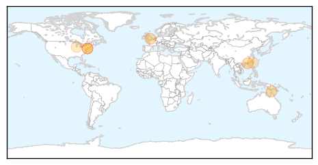
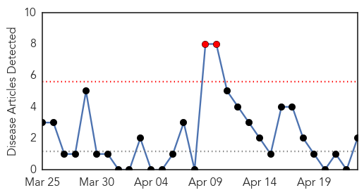

Influenza
30-Day Web Trend
3 alerts, 4 warnings

30-Day Twitter Trend
3 alerts, 0 warnings

Article Locations
Article Confidences

Top Articles:
- 0.999
- The flu is back. (It never really goes away.)
- 0.999
- Second wave of flu blows in with spring; Northeast states hardest hit by influenza B
- 0.995
- MLHU confirms five influenza-related deaths in the past week
- 0.985
- CHP closely monitors human case of avian influenza A(H7N9) in Taiwan
- 0.973
- Early surge in flu cases points to horror winter
- 0.734
- Avian Flu Scan for Apr 23, 2014
- 0.710
- Harvard Medical School Researchers Awarded Twitter Data Grant
Top Tweets:
-
No tweets found for Apr 23, 2014
Hepatitis
30-Day Web Trend
2 alerts, 0 warnings

30-Day Twitter Trend
0 alerts, 0 warnings

Article Locations

Article Confidences

Top Articles:
Top Tweets:
-
No tweets found for Apr 23, 2014